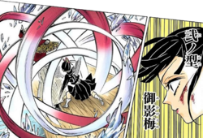
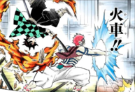

Total Concentration Breathing:
Breathing Styles are swordsmanship forms practiced and taught by the Demon Slayer Corps. The Breathing Styles make use of specific and concentrated breath patterns, which increase the user's lung capacity and amount of oxygen in the blood. This increase of oxygen allows the user to enhance their physical abilities and mental concentration, allowing them to fight on par with Demons, whose physical prowess surpasses that of the average human.
Focused Breathing is also capable of clotting wounds from severe injuries and slowing down the circulation of poison in the bloodstream.
All known Breathing Styles currently taught within the Demon Slayer Corps are derived from the Sun Breathing, the first one ever created.
Total Concentration Breathing
Insect Breathing
Insect Breathing (蟲むしの呼こ吸きゅう Mushi no kokyū?)[1] is a Breathing Style branched out from the Flower Breathing, which itself is branched out of the Water Breathing.
This style is the personal creation of Shinobu Kocho, who designed it to compensate for her lack of physical strength to cut off a Demon's head. The sword style's main focus is stabbing, thrusting, and making shallow cuts with a specially coated/made sword to inflict multiple wounds onto the intended target in order to inject various lethal Wisteria-based poisons into the intended target.
Breathing Style Relationship Chart: Sun→Water→Flower→Insect
Attacks:
- Butterfly Dance: Caprice-The swordsman jumps forwards towards the opponent, stinging them multiple times with the blade to inject poison.

- Dance of the Bee Sting: True Flutter-The swordsman dashes at the target with incredible speed and delivers a single thrust strengthened by the momentum to inject the poison.
- Dance of the Dragonfly: Compound Eye Hexagon-A six-strike-based attack where the user attacks the target in six different areas of the body in order to inject lethal poison in each area, increasing the chances of them succumbing to the poison.
- Dance of the Centipede: Hundred-Legged Zigzag-The swordsman runs at full speed in a zigzag pattern to generate enough momentum, creating a powerful single thrust that simultaneously injects poison into the intended victim. The blinding speed and erratic pattern also serve to throw the opponent into confusion and create an appropriate opening.
Love Breathing
Love Breathing (恋こいの呼こ吸きゅう Koi no Kokyū?) is a personal Breathing Style created by the Love Hashira, Mitsuri Kanroji. The Love Breathing itself is originally branched out from the Flame Breathing. The forms and techniques that are used in this Breathing Style can only be successfully performed by Mitsuri due the unique constitution of her body that renders her incredibly flexible and agile, but still possessing inhuman strength due to her muscles being eight times denser than a normal human's, allowing her to deliver fast and powerful blows and move unhindered due to her body not being physically bulky.
Breathing Style Relationship Chart: Sun→Flame→Love
Attacks:
- First Form: Shivers of First Love-Mitsuri dashes forward with a series of slashes.
- Second Form: Love Pangs-An extended whipping slash.
- Third Form: Catlove Shower- Mitsuri leaps and unleashes a series of ranged arced attacks in quick succession.
- Fifth Form: Swaying Love - Wildclaw-Mitsuri somersaults backward through the air, creating a long whiplike string of attacks, before coiling her sword around her opponents neck.
- Sixth Form: Cat-Legged Winds of Love-Kanroji twirls upside-down and creates a helical slash with her sword, deflecting incoming attacks.
Flower Breathing
Flower Breathing (花はなの呼こ吸きゅう Hana no Kokyū?) is a Breathing Style derived from the Water Breathing, used by the former Flower Hashira, Kanae Kocho and her sister, Kanao Tsuyuri.
Breathing Style Relationship Chart: Sun→Water→Flower
Attacks:
- Second Form: Honorable Shadow Plum-A defensive technique that deflects attacks using rotating sword slashes.

- Fourth Form: Crimson Hanagoromo-A single sword slash that curves and twists.
- Fifth Form: Peonies of Futility- A graceful flurry of nine consecutive attacks that flow and weave in on themselves.
- Sixth Form: Whirling Peach-A technique used after or during evasion, the user spins around moving with their body weight to deliver an attack.

- Final Form: Equinoctial Vermilion Eye-A focusing technique that raises the users kinetic vision to its maximum, while using this technique the user perceives the world as if it were in slow motion. Usage of the technique, however, is highly dangerous, as the tremendous strain on the eyes can causes ruptured blood vessels and could cause one to have partial or complete blindness.[6] This technique is still usable even if the user only has one eye.
Serpent Breathing
Serpent Breathing (蛇へびの呼こ吸きゅう Hebi no kokyū?) is a Breathing Style derived from the Water Breathing. It focuses on twisting and bending the sword like how a serpent slithers. The attacks are not direct and constantly meander which can ultimately strike anywhere.
Breathing Style Relationship Chart: Sun→Water→Serpent
Attacks:
- First Form: Winding Serpent Slash- Obanai rotates and releases a circular slash in front of him.
- Second Form: Venom Fangs of the Narrow Head-Obanai goes behind his opponent at blinding speed and lops off their head.
- Third Form: Coil Choke-Obanai curves his sword like a slithering snake and quickly decapitates his opponent.
- Fourth Form: Twin-Headed Reptile-Obanai leaps forward and performs a horizontal slash that slices through the target.
- Fifth Form: Slithering Serpent-Obanai using his bending sword, curves it right to left at incredible speeds. This technique is capable of decapitating multiple targets at once.
Beast Breathing
Beast Breathing (獣けだものの呼こ吸きゅう Kedamono no kokyū?) is a Breathing Style personally created and self-taught by Inosuke Hashibira after living in the mountains and fighting for survival. It is said to be distantly derived from the Wind Breathing. The style enhances a user's sense of touch, while being able to utilize several different techniques.
Breathing Style Relationship Chart: Sun→Wind→Beast
Attacks:
- First Fang: Pierce-Inosuke stabs the target's neck with both blades.
- Second Fang: Rip and Tear- A double slash with his two blades in both diagonals (like X).
- Third Fang: Devour-Simultaneous horizontal slashes towards the target's throat.
- Fourth Fang: Slice 'n' Dice-A multiple diagonal double slashes with both swords.
- Fifth Fang: Crazy Cutting-The 'Mad Cleave' is a technique which slices everything in all directions.
- Sixth Fang: Palisade Bite-A simultaneous decapitation with his two swords from both directions.
- Seventh Form: Spatial Awareness-Inosuke can identify the position of enemies by feeling small disturbances in the air. This technique was so strong that Inosuke could sense all the demons spread out through a whole mountain.
- Eighth Fang: Explosive Rush-Inosuke charges towards his opponent while dual wielding, then he swings his blades to decapitate them.
- Ninth Fang: Extending Bendy Slash-Inosuke dislocates the joints of his arm to increase the range of his attack.
- Tenth Fang: Whirling Fangs-Inosuke spins his swords in a circular motion.
- Sudden Throwing Strike-Inosuke throws both of his blades at an enemy.
Mist Breathing
Mist Breathing (霞かすみの呼こ吸きゅう Kasumi no kokyū?) is a Breathing Style derived from the Wind Breathing used by the Mist Hashira Muichiro Tokito.
Breathing Style Relationship Chart: Sun→Wind→Mist
Attacks:
- First Form: Low Clouds, Distant Haze- A straightforward thrust attack.
- Second Form: Eight-Layered Mist-Muichiro unleashes multiple slashes one on top of the other in quick succession.
- Third Form: Scattering Mist Splash-A circular slash that blows away projectile attacks from enemies.
- Fourth Form: Shifting Flow Slash-A quick slash from the sheathe reminiscent of an Iaidō technique.
- Fifth Form: Sea of Clouds and Haze- Muichiro charges towards an enemy attack at high speed and unleashes a flurry of slashes.
- Sixth Form: Lunar Dispersing Mist-Muichiro leaps high in the air and sends a series of countless ranged slashes downwards.
- Seventh Form: Obscuring Clouds- A technique in which Muichiro drastically changes the tempo of his movement to disorient an enemy. When he shows himself, his speed will appear to be extremely slow but when he hides, he moves in the blink of an eye. This technique was created by Muichiro Tokito himself, a feat which Upper Rank 1, Kokushibo.
Sound Breathing
Sound Breathing (音おとの呼こ吸きゅう Oto no kokyū?) is a Breathing Style unique only to the Sound Hashira Tengen Uzui. The Sound Breathing is branched out from the Thunder Breathing. This Breathing involves using a battle strategy called a "Score", which involves Uzui reading his opponents movements and deconstructing them into sound by analyzing the rhythm of their movements. Through this, he is able to take advantage of their openings to much greater effect by striking in a way similar to making the beat to a song. In conjunction with this, he uses small but powerful anti-demon bombs made with a special gunpowder that are capable of overpowering an Upper Rank Demon briefly.
Breathing Style Relationship Chart: Sun→Thunder→Sound
Attacks:
- First Form: Roar-Uzui lifts his twin swords above his head and slams them down with great force whilst simultaneously creating an explosion with his bombs, causing a loud sound resembling thunder.
- Fourth Form: Constant Resounding Slashes-Uzui holds his swords apart and spins them rapidly in conjunction with releasing his bombs, making this technique a combination of offense and defense.
- Fifth Form: String Performance-Uzui holds one of his swords with a reverse grip and spins the other using the chain that connects them. He couples this by also releasing numerous bombs to detonate. This technique was able to overpower an Upper Rank Demon.
Wind Breathing
Wind Breathing (風かぜの呼こ吸きゅう Kaze no Kokyū?) is one of the five Breathing Styles derived directly from the Sun Breathing. The Breathing Style was originally developed & taught by Yoriichi Tsugikuni to an unknown student, who could not master the Sun Breathing and was instead trained in a specific alternative breathing style to better suit his student's specific strengths and weaknesses eventually becoming an independent breathing all together. The same is applicable for the other main Branch Breathing Styles.[1]
The Beast Breathing, despite being independently developed by Inosuke Hashibira, is a derivative of the Wind Breathing, so it can be assumed that both styles use an enhanced sense of touch in their techniques.
The Mist Breathing is also noted to have been originally a derivative of the Wind Breathing.
Breathing Style Relationship Chart: Sun→Wind
Attacks:
- First Form: Dust Whirlwind Cutter-The swordsman dashes forward in a cyclone of slashes.
- Second Form: Claws-Purifying Wind- The swordsman lifts the sword upwards towards the right, above his head and does a vertical slash down creating four blades of wind that slashes down on the enemy like claws.
- Third Form: Clean Storm Wind Tree-The swordsman uses his arm to slash around his body to create a whirlwind around him that slices up everything in its path.
- Fourth Form: Rising Dust Storm-The swordsman swings his blade downwards from several directions.
- Fifth Form: Cold Mountain Wind-The swordsman strikes from above while falling in a multitude of arced slashes.
- Sixth Form: Black Wind Mountain Mist-The swordsman strikes from the side, while rotating the body in a position to deliver a uppercut movement, creating a slashing tornado.
- Seventh Form: Gale - Sudden Gusts-The swordsman leaps into the air while swinging his blade which generates gale-force winds to shred his opponent apart.
- Eighth Form: Primary Gale Slash-The swordsman leaps into the air and swings his blade which generates circular torrents of wind.
- Ninth Form: Idaten Typhoon- The swordsman backflips into the air and while upside-down, swings his blade to release a circular gust of wind.
Stone Breathing
Stone Breathing (岩いわの呼こ吸きゅう Iwa no kokyū?) is one of the five main Breathing Styles derived from the Sun Breathing. The Breathing Style was originally created by one of Yoriichi Tsugikuni's students who attempted to learn the Sun Breathing, but, due them to not being as innately powerful as Yoriichi, unable to master it and was instead taught an alternative personalized breathing style by their teacher that focused specifically on their strengths and weaknesses, eventually branching out completely and becoming the Stone Breathing.
It is currently not known who is the primary Cultivator of this Breathing Style is within the Demon Slayer Corps.
Breathing Style Relationship Chart: Sun→Stone
Attacks:
- First Form: Serpentinite Bipolar-Gyomei throws both the flail and axe towards his intended target and manipulates the chain by rotating it thus causing the axe and flail to also rotate in order to drill and grind right though his target.
.png)
- Second Form: Upper Smash-Gyomei throws both his axe and spiked flail for a pincer move before smashing down on the chain to cause the flail to then rebound and smash his target from afar.
- Third Form: Stone Skin-Himejima unleashes a series of slashes with his sword deflecting nearby attacks.
- Fourth Form: Volcanic Rock - Rapid Conquest- Gyomei manipulates both the flail and axe weapons at both ends of the chain by swinging the chain on both sides in order to strike his opponents using a two pronged wide ranged attack.
- Fifth Form: Arcs of Justice- Gyomei utilizes a powerful barrage with his flail and axe, doing a great amount of damage. The axe is destined to hit first with the trajectory of the flail following from the opposite side and slamming into the opponent.
Thunder Breathing
Thunder Breathing (雷かみなりの呼こ吸きゅう Kaminari no Kokyū? is one of the five main Breathing Styles directly derived from the Sun Breathing. It was created from one of Yoriichi Tsugikuni's students who attempted to learn the Sun Breathing, but due to not being as innately powerful as Yoriichi, they were instead taught an alternated breathing style that focused on their individual strengths and weaknesses, which eventually evolved into the Thunder Breathing.
It focuses on channeling strength into the user's legs. The primary cultivator for the Demon Slayer Corps was Jigoro Kuwajima.
Breathing Style Relationship Chart: Sun→Thunder
Attacks:
- First Form: Thunderclap and Flash-The user dashes forward and slashes at their opponent with incredible speed. Zenitsu has honed this ability to the extent of being able to repeat the dash multiple times in quick succession.

- Six Fold-A compilation of the First Form with a series of six dashes. Primarily used by Zenitsu.

- Eight Fold-Zenitsu dashes eight times within one use of this technique
.png)
- God Speed-Further augments the speed of Thunderclap and Flash.
- Second Form: Rice Spirit-The swordsman is able to generate five straight attacks around the user in a single moment.
- Third Form: Thunder Swarm-Generates a spinning wave that strikes all directions of the foe.
- Fourth Form: Distant ThunderThe user releases multiple ranged strikes towards a target.
- Fifth Form: Heat Lightning- A single, focused, slashing attack.
- Sixth Form: Rumble and Flash- A series of strong ranged attacks released around the user .
- Seventh Form: Honoikazuchi no Kami-A form developed by Zenitsu. The user conjures the image of a dragon-like creature of lightning while attacking at blinding speeds.
Flame Breathing
Flame Breathing (炎ほのおの呼こ吸きゅう Honō no kokyū?) is one of the five main Breathing Styles directly derived from Sun Breathing. The Breathing Style of the Flame Breathing seemed to have been developed by a distant ancestor of the Rengoku Family, who was originally a student of Yoriichi Tsugikuni. It can be assumed that this student attempted to master the Sun Breathing but, due to him not being as innately powerful as Yoriichi, his teacher altered his Breathing Style training in order to better focus on his students individual strengths and weaknesses. Eventually, his student continued to develop and train this style until it became its own unique breathing and was subsequently named the Flame Breathing. Since then, this particular Breathing Style has been passed down and taught through generations of his descendants and the future members of the Demon Slayer Corps.
Breathing Style Relationship Chart: Sun→Flame
Attacks:
- First Form: Unknowing Fire-The swordsman charges towards his opponent at high speed and decapitates them in one or multiple slashes.
- Second Form: Rising Scorching Sun-The swordsman uses an upwards moving slash attack.
- Fourth Form: Blooming Flame Undulation-The swordsman spins his sword in a circular motion, deflecting his enemies attacks.
- Fifth Form: Flame Tige-A series of sword slashes that take on the form of a tiger.
- Ninth Form: Rengoku-A devastating dashing slash initiated from a high stance. The technique carves a deep impression in the ground.
Water Breathing
Water Breathing (水みずの呼こ吸きゅう Mizu no kokyū?) is one of the five main Breathing Styles directly derived from the Sun Breathing. The Breathing Style was originally created by one of Yoriichi Tsugikuni's students who attempted to learn the Sun Breathing, but, due to not being as innately talented as Yoriichi, they were instead taught and trained an alternative personalized breathing style that focused on their strengths and weaknesses, eventually becoming the Water Breathing.[1]
It is said to be the most common Breathing Style among Demon Slayers due to being the easiest to learn for beginners. The primary Cultivator for the Demon Slayer Corps is Sakonji Urokodaki, though there are other Cultivators as well.[2] The Eleventh Form is an original technique created by Giyu Tomioka.
Breathing Style Relationship Chart: Sun→Water
Attacks:
- First Form: Water Surface Slash-The swordsman generates enough momentum to create a powerful single concentrated slash.
- Second Form: Water Wheel-The swordsman leaps and vertically spins forward in the air while releasing a flowing attack in a circular motion.
- Second Form: Improved - Lateral Water Wheel-An alternate variation of Second Form: Water Wheel that uses a horizontal spin.
- Third Form: Flowing Dance-The swordsman swings his blade at his opponent in a way that mimics the movement of waves on the surface of water.
- Fourth Form: Striking Tide-The swordsman makes multiple consecutive slashes while twisting their body in a flowing fashion similar to a harsh tide.
- Fifth Form: Blessed Rain After the Drought- A "sword strike of kindness" that kills the target with little to no pain. Used when the enemy surrenders.

- Sixth Form: Whirlpool-The swordsman fiercely twists his upper and lower body, creating a whirlpool that cuts anything caught in it. It can be used in a place without footing, and if used underwater can generate a large whirlpool that draws in anything nearby in addition to cutting them up like a large blade.
- Whirlpool: Flow-
A combination ofThird Form: Flowing DanceandSixth Form: Whirlpool.The swordsman combines the footwork from Flowing Dance and the twisting aspect of Whirlpool, resulting in the swordsman to perform an attack around the user and conjure a twisting, swirling, vicious flow of water to redirect projectiles from multiple angles.
- Seventh Form: Piercing Rain Drop-A fast and accurate stab. The fastest Breath of Water technique.
- Seventh Form: Piercing Rain Drop - Curve-
A modified strike that hits in an arc from an angle in order to minimise the impact of a moving target.
- Eighth Form: Waterfall Basin-The swordsman cuts the target vertically.
- Ninth Form: Splashing Water Flow-Minimizes the landing time and surface needed when landing, allowing the user to move without limits. Ideal when fighting in a place with no solid foothold.
- Ninth Form: Splashing Water Flow - Turbulent
- Tenth Form: Constant Flux-A continuous attack that increases in power with each rotation, creating a strong slash.
- Eleventh Form: Dead Calm-Created by the current Water Hashira, Giyu Tomioka. The swordsman ceases any body movements and enters a state of complete defence, deflecting and blocking any incoming attacks with imperceptible speed. However, its effectiveness is limited as fast and numerous attacks can break through.
Moon Breathing
Moon Breathing (月つきの呼こ吸きゅう Tsuki no kokyū?) is a Breathing Style derived from the Sun Breathing[1] used by Upper Rank 1, Kokushibo, who was one of the first Demon Slayers who utilized breathing techniques. The techique allows the user to create many "chaotic blades" when slashing that vary in length and size. It is known that Kokushibo continued to develop and add techniques to the Breathing Style over the centuries as an immortal Demon. At this point in the story, it is the only known Breathing Style to possess at least 16 different techniques, easily surpassing the other Breathing Styles.
It has been revealed that, like all of the other original breathing styles, the Moon Breathing also branched out of the Sun Breathing. When its creator, Michikatsu Tsugikuni, attempted to learn the Sun Breathing from his twin brother, Yoriichi Tsugikuni, he discovered he was unable to master the breathing style and so was instead trained in a alternate Breathing Style. Yoriichi created it fit and cover his individual strengths and weaknesses, and Michikatsu then continued to train and develop this breathing until it eventually evolved into its own unique Breathing Style, which he named Moon Breathing.
Breathing Style Relationship Chart: Sun→Moon
Attacks:
- First Form: Dark Moon - Evening Palace-Kokushibo draws his sword and slashes swiftly in a single motion; like with all Moon Breathing techniques, numerous chaotic blades originate from the slash. This technique resembles Iaido.
- Second Form: Pearl Flowers Moongazing-Kokushibo performs several slashes while sending a barrage of chaotic blades forward.
.png)
- Third Form: Loathsome Moon - Chains-Kokushibo swings his sword rapidly in two crescent slashes, from which a storm of smaller crescents spread. This technique causes huge destruction in a small area.
- Fifth Form: Moon Spirit Calamitous Eddy-Kokushibo makes multiple curved slashes layered over one another, resembling a rising vortex. Numerous chaotic blades originate from these slashes. Kokushibo performed this attack without swinging his blade.
- Sixth Form: Perpetual Night, Lonely Moon - Incessant-Kokushibo releases a wild storm of slashes in multiple directions. This technique was powerful enough to not only slice up multiple Hashira around him but also overwhelm the Wind Hashira Sanemi Shinazugawa.
- Seventh Form: Mirror of Misfortune - Moonlit-Kokushibo swings his sword in a powerful frontal slash that then creates a multi directional frontal assault, powerful enough to create several deep gouges in the ground and push back two Hashira.
- Eighth Form: Moon-Dragon Ringtail-Kokushibo uses a direct frontal attack that creates a single gigantic slash.
- Ninth Form: Waning MoonswathsKokushibo creates a seemingly endless stream of slashes, capable of cutting down his intended target from a long range
- Tenth Form: Drilling Slashes - Moon Through Bamboo Leaves-Kokushibo creates a triple-layered slash twister, capable of mowing down his targets into three clean pieces.
- Fourteenth Form: Catastrophe - Tenman Crescent Moon- Kokushibo swings his sword and creates a chaotic vortex of powerful omni-directional slashes that destroys whatever is caught up within its attack radius.
- Sixteenth Form: Moonbow - Half Moon-Kokushibo swings his sword in a downward slash, resulting in a powerful sixfold slash crashing down on his opponents; the attack itself is powerful enough to create several miniature craters where the slashes have landed.
Sun Breathing/Hinokami Kagura
Hinokami Kagura
The Hinokami Kagura (ヒノカミ神楽かぐら Hinokami Kagura?, lit. Dance of the Fire God) is a Breathing Style only known and taught by the Kamado family.
It is passed on from father to son in every generation alongside the hanafuda earrings. The Kamado family uses the breathing style within a ritual ceremony practiced every new year, where the Breathing Style user offers the Fire God a dance from sunset to sunrise to ward off diseases.
The dance is composed of twelve segments repeated throughout the night. The last user is Tanjiro Kamado, who learned the breathing style from his father, Tanjuro Kamado. Though, other people can learn this, if taught by a Kamado.
Sun Breathing:
Sun Breathing (日ひの呼こ吸きゅう Hi no kokyū?) is a style of swordsmanship utilized by the first Demon Slayer to use "breaths", Yoriichi Tsugikuni, and serves as the basis for other Breathing Styles derived from it as a result of Yoriichi changing the breathing techniques to suit the individuals he taught. The derived styles eventually branched out into the main breathing styles: Water Breathing, Flame Breathing, Wind Breathing, Thunder Breathing, Stone Breathing, and Moon Breathing. Before Kokushibo died, he mentions that all swordsman who knew of the Sun Breathing were killed by him and Muzan Kibutsuji, before proceeding to question why the Sun Breathing still persists due to the existence of the Hinokami Kagura (ヒノカミ神楽かぐら Hinokami Kagura?).
Kokushibo and Shinjuro Rengoku independently identified the Hinokami Kagura as the Sun Breathing, the latter through the memories of his Demon-slaying ancestor. The two styles were later confirmed to be the same. There is a (previously unknown) thirteenth form, which can be learned from the Sun Breathing as a Hinokami Kagura User, that is achieved by completing the twelve movements in succession.
However, Tanjiro remained uncertain of the breathing style's true nature until he gained access to the memories of his ancestor, Sumiyoshi. His ancestor's wife, Suyako, requested to see the Sun Breathing performed during Yoriichi's last visit to the family. Sumiyoshi memorized the movements and was gifted the hanafuda earrings by Yoriichi before parting. The breathing style and earrings were then secretly passed on from father to son in the Kamado family every generation as a rite of passage. Henceforth, the Sun Breathing became known as the Hinokami Kagura.
Attacks:
- Dance- A single high-powered vertical slash.

- Flash Dance- First used by Tanjiro Kamado. The user utilizes a similar method like the Thunderclap and Flash technique of the Thunder Breathing, allowing them to use an advanced version of Dance by inhaling huge amounts of oxygen, increasing the pumping of blood through the entire body, focusing it on the legs, and releasing it all to assault the target with a slash. This technique was capable of outspeeding Genya Shinazugawa and Nezuko Kamado, as well as the fleeing Hantengu, although it is still said to be slower than Zenitsu Agatsuma's Thunderclap and Flash.
.png)
- Clear Blue SkyThe user spins their body vertically to create a 360-degree slash. It is likely the model to the Water Breathing: Second Form - "Water Wheel."
- Raging SunThe user unleashes two horizontal slashes to hit or intercept an enemy from the front or side.
- Fake RainbowThe user utilizes this technique to evade incoming attacks with high-speed twists and rotations, thus creating afterimages. The afterimages work most effectively on enemies with good vision as they will probably fail attack the afterimage instead of the actual body of the user.
- Fire WheelThe user leaps behind the opponent and spins in the air while releasing a flaming attack in a circular motion.

- Burning Bones, Summer Sun A circular slash that defends from imminent frontal attacks.
- Sunflower Thrust A single thrust attack with the point of the blade.
- Solar Heat HazeThe user charges towards the target, attacking it with a haze covered slash that seemingly fails to land, but actually does hit the target.
- Setting Sun TransformationThe user flips into the air to deliver an upended flaming sword slash.
- Beneficent RadianceThe user spirals into the air to deliver a powerful slash to those caught in it.
- Dragon Sun Halo Head Dance Resembling a dragon, the user moves in circles to avoid enemy attacks and slashes then multiple times at the target. This technique was first utilized by Tanjiro in conjunction with Nezuko's Blood Demon Art Blood Burst to enhance the effectiveness.
- Flame Dance A two-combo strike which starts with a vertical slash and then a horizontal one right after
- Thirteenth FormThe user continuously performs all twelve forms of the breathing style in repetitive succession to increase the accuracy and agility of his movements while reducing fatigue. This form was created solely for the purpose of killing Muzan, since the repetition of all twelve forms aims to destroy Muzan's twelve vital organs (seven hearts and five brains) that move freely inside his body thanks to his shape-shifting ability.